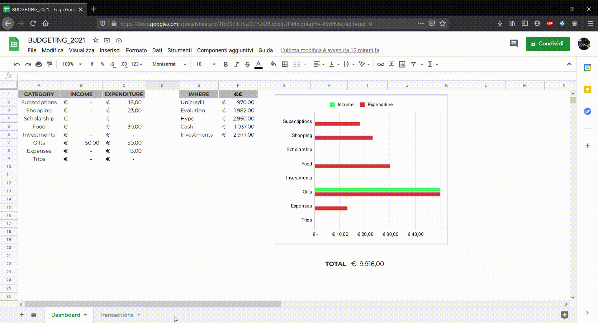
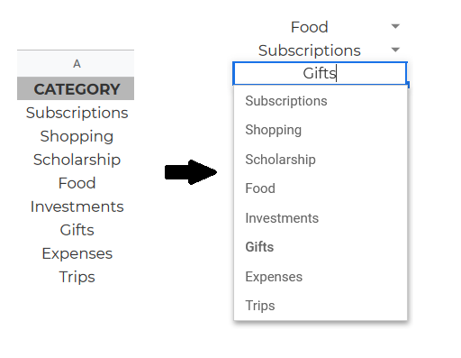
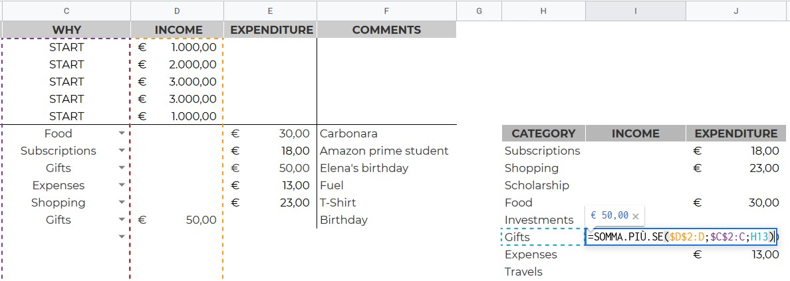
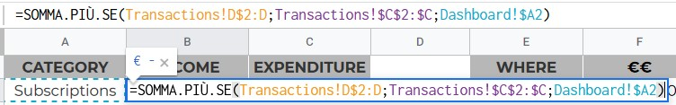

How I Manage My Finances
Hey friends, welcome back! Today I would like to share how I manage my finances. I have been tracking my expenses
for a few years, and each year, in December I update my spreadsheet template for the following year. I am always
fully convinced that “I found the final version”, but I always find several weaknesses along the way.
There are several apps out there, but I prefer to build it by me, because I can fit all my current needs.
Then, by using spreadsheet, I can also update it with my smartphone and iPad. So, I don’t feel the lack of a mobile app.
Let’s start by considering the weakness about my last year’s spreadsheet:
-
It wasn’t scalable : I opened another bank account last year, then I needed to add another “section” but I had some troubles, in fact I ended up with a temporary solution.
-
There were more informations than I needed: the dashboard had too many useless informations and the pie charts with the income and expenses were too much confusing (because there were too many categories)
-
There were too many sheets: I had one sheet for each month. It is useful if you often check your monthly expenses, but it is quite a mess.
So the new one is scalable, minimal and concise! Now I have just two pages: a minimal dashboard and another one where I track all the transactions. Notice that these transactions and initializations are all fake.

Here we are, I selected for my dashboard just an horizontal barchart, probably it is not the
fanciest one, but there are some limitations with spreadsheet. This time I avoided complex and useful charts and tables.

I used those values as validators for these two columns over here! I think it is a nice compromise, and it works fine for me. The only thing that it is not scalable (yet) is the monthly summary. So, in this case, at the beginning of the month I will copy-paste the previous one and I will change the interval for the query. It will take 2-3 minutes, so it is not that big of a deal. The core of the entire spreadsheet is the SOMMA.PIU.SE function (SUMIFS in English), that allows to sum over an interval (the expenditure or revenue column) if it satisfies a condition. In my case, I need that it is equal to the category or bank account that I want to track.

Here, for example, I sum over the D column (revenue), if there is “Gifts” on the C column (why). Just with a drag and drop, I gain the same results on the entire column. On the other hand, for the dashboard I do the same thing but I need to specify the sheet (that in my case is “Transactions”)

It is a minimal tracker and I think that it could be perfect for the next year. It can be improved by considering “fixed”
incomes, but since I do just occasional jobs at the moment (private teacher and tutor) it is fine as well as it is.
Thanks for reading, and Merry Christmas!
Francesco